Getting Started
To create the map, we are going to need the following tools and assets (in addition to the Flashpoint Campaigns game):
-
QGis, version 2.x, x64 for Windows (not the version 3.x series). 2.18 is the latest 2.x version.
-
QGis style presets files for elevation, map elements and print composition; they preset match the colors, thickness and resolution expected by the Flashpoint Map Values Scanner.
When using a computer connected to the Internet, it is recommended to download QGis and download and install the plug-ins the ‘normal way’. See sections 3.1 and 3.2.
When using a computer that is not connected to the Internet, please install QGis and the plug-ins from the installer files made available. See sections
Online: Downloading and InstallingQGis
The QGis 2.18 downloads are available from the QGis download folders: https://download.qgis.org/downloads/
Pick the installer most suitable for your system. Typically, this will be Windows stand-alone installer 64-bit ( QGIS-OSGeo4W-2.18.28-2-Setup-x86_64.exe ). https://download.qgis.org/downloads/QGIS-OSGeo4W-2.18.28-2-Setup-x86_64.exe
After downloading, install QGis. After installing QGis, launch the QGis Desktop app.
Online: Installing inQGis
Our next step is to install, from within QGis, three plug-ins which will help us create maps:
-
MMQGis plug-in, which adds the ability to create 500m hexagon grids to align with / snap to
-
OpenLayers plug-in, which adds the ability to add a layer from Google Maps (terrain or satellite), Bing Maps (terrain or satellite) or OpenStreetMaps (various) in the editor, to guide our drawing.
-
GeoSearch plug-in, which will help us find and navigate to named locations
Two Essential Plug-ins
Install the plug-ins by choosing the "Plugins" menu, "Manage and Install Plugins". A dialog will pop up, enabling us to search and install plug-ins.
Enter "mmqgis" in the search box, select it in the search results, and press "Install Plugin".
Next, enter "openlayers" in the search box, select the "OpenLayers Plugin" from the search results, and install it.
Close the "Manage and Install Plugins" dialog.
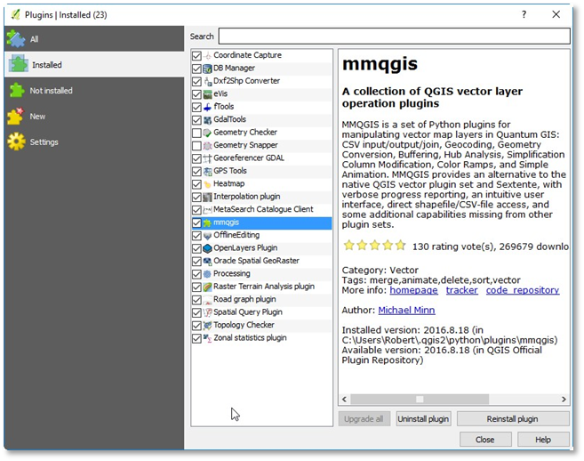
Figure 6. QGis Manage and Install Plugins dialog with MMQGis and OpenLayers plug-ins installed
Creating a Folder for Our Map Project and Extracting FC Presets
Switch to Windows explorer and create a new folder for this map creation project. We’ll use it to store our QGis map data.
For this project, I’ve created a “Minden area” folder somewhere under my Documents.
From the example project, copy the three subfolders ‘_qgis_elevation_styles’, ‘_qgis_print_composer_templates’ and ‘_qgis_vector_styles’:
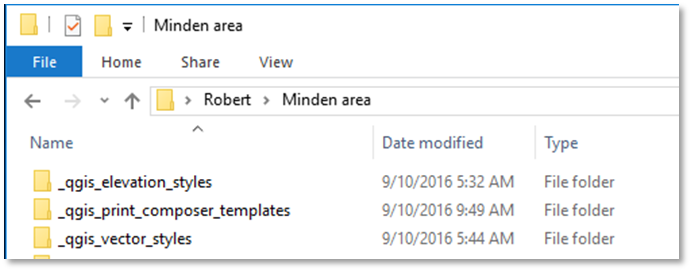
Figure 5 Our new map project folder ‘Minden area’ with the qgis_fcrs_styles_and_templates.zip extracted there
Setting Up OurQGis Project and Coordinate System
Let's set up our first QGis project. It might be a bit of work, but the good news we can (re)use the project for multiple maps.
Switch to or launch QGis Desktop
Use "Project" Menu, New to create a new project.
Use "Project" Menu, Project Properties to open the Properties dialog.
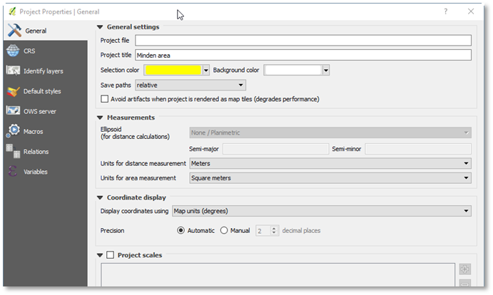
Figure 6 Enter project title in project properties
Enter a project title, then change to the CRS tab.
Warning
In the CRS tab, setting the right coordinate reference system for the project is essential to achieve the correct map scale; (I have had to redo over 20 maps after getting it wrong here).
We need the CRS associated with the right UTM zone (out of 60 UTM zones) for the location at hand.
See the Appendix C for which UTM zone to use. For this map, in former West-Germany, the CRS to use is UTM32N (since UTM32U is north (N) of the equator). Normandy, France would be UTM30N, Kursk, Russia would be UTM37N, Korea would be UTM52N, and the Falklands/Malvinas would be UTM21S.
In the Filter box, enter WGS UTM followed by the UTM column, and select the corresponding WGS84/ UTM zone. For this map, it will be WGS 84/ UTM zone 32N. Select it and press OK.
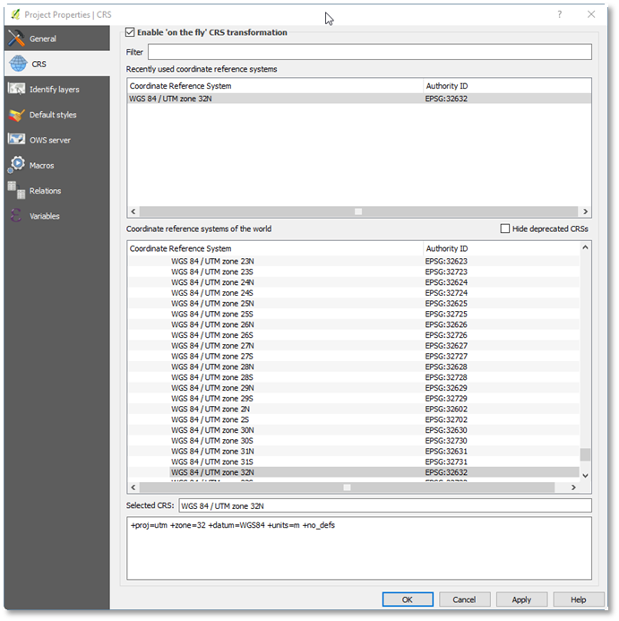
Figure 7 Selecting UTM 32N (for West-Germany maps), and enable 'on-the-fly' CRS transformation
Enable automatic 'on the fly' CRS conversion. This is necessary for QGis to adapt its projection towards tiles from Google / Bing/ OpenStreetmap overlays. Press OK.
Now it is time to save our project. Make sure to save the project in the folder we already created.
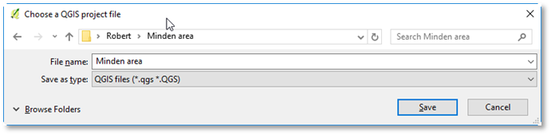
Figure 8 Saving the project in a dedicated folder
Downloading and Adding Digital Elevation Model (DEM) Data
For our map, we need (digital) elevation data. This elevation data can be downloaded for free from, for example, Google’s EarthEngine: https://earthengine.google.com/.
Sign-up for the Earth Explorer and then enter the Earth Explorer.
The elevation data is available via:
https://developers.google.com/earth-engine/datasets/catalog/CGIAR_SRTM90_V4
Pan and zoom towards the area in which the map is situated. Next, add a geometry layer (called ‘geometry’) with a single rectangle using the drawing tools. Make the rectangle large enough (I’ve covered most of West-Germany and East-Germany).
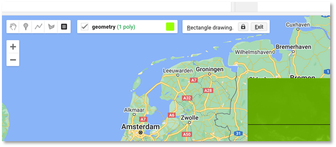
Figure 9
In the scripts panel, add code to read and export SRTM elevation data for the rectangular area we’ve drawn, as shown below.
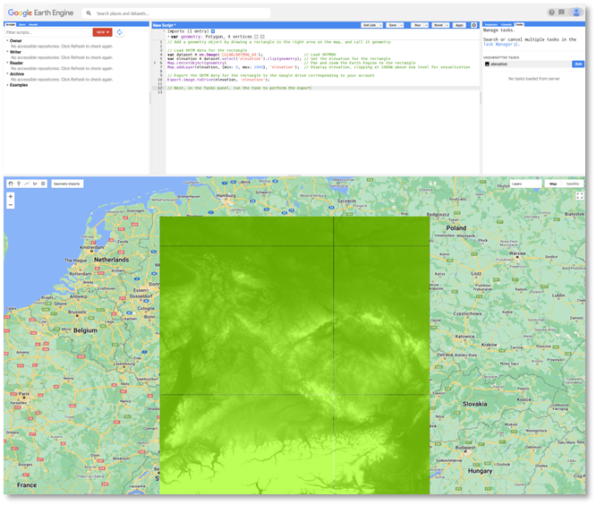
Figure 10
Script:
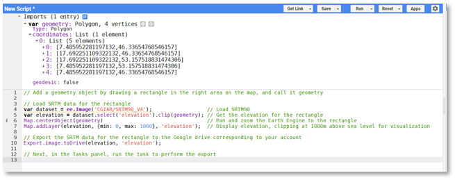
Figure 11
// Add a geometry object by drawing a rectangle in the right area on the map, and call it geometry
// Load SRTM data for the rectangle
var dataset = ee.Image('CGIAR/SRTM90\_V4'); // Load SRTM90
var elevation = dataset.select('elevation').clip(geometry); // Get the elevation for the rectangle
Map.centerObject(geometry) // Pan and zoom the Earth Engine to the rectangle
Map.addLayer(elevation, {min: 0, max: 1000}, 'elevation'); // Display elevation, clipping at 1000m above sea level for visualization
// Export the SRTM data for the rectangle to the Google drive corresponding to your account
Export.image.toDrive(elevation, 'elevation');
// Next, in the Tasks panel, run the task to perform the export
Figure 12 The script as copy-able text
Next, run the script, which will result in a task in the Tasks tab on the right side of Earth Explorer. Select and Run the task to export the elevation data to your Google Drive. Make sure to select the GEO_TIFF format and a Scale (resolution) of 128m per pixel.
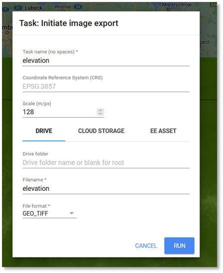
Figure 13
Finally, run the task, wait for it to be completed, and download the generated .tif file from from Google drive. Place it in the project’s folder.
Then switch to QGis and our project.
In QGis, we'll add a new raster layer to our project. Choose the "Layer" menu, Add Layer, "Add Raster Layer", and select the .tif file:
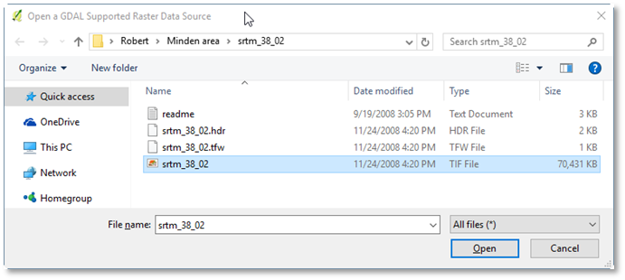
Figure 14 Adding a Raster Layer containing the SRTM elevation data
After adding the layer, we'll see the layer displayed in our project in gray scale:
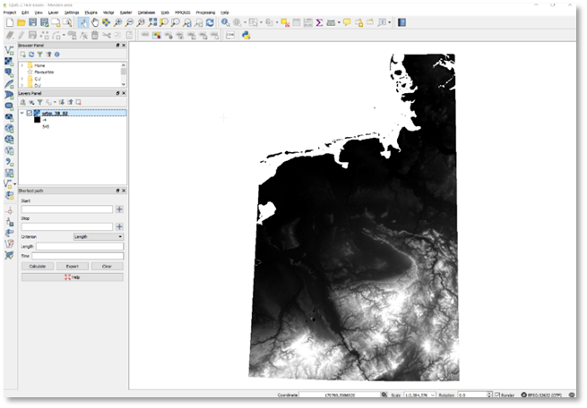
Figure 15 Our project with the DEM raster layer
Before we save the project, let's close some QGis' UI panels which we won't need: the Browser panel and the Shortest path panel.
Save the project.
Finding Minden
To find Minden’s location, we first look it up on the web outside QGis, and, using the OpenStreetMap layer pan and zoom to the same area.
(Yes, QGis 2.x used to have a working GeoSearch plug-in, but that plug-in is no longer functional).
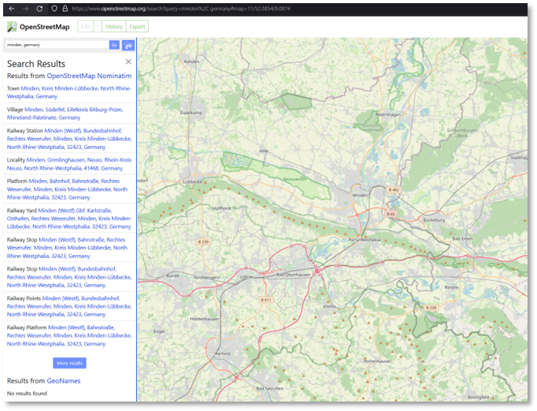
Figure 16 Looking up Minden on the web.
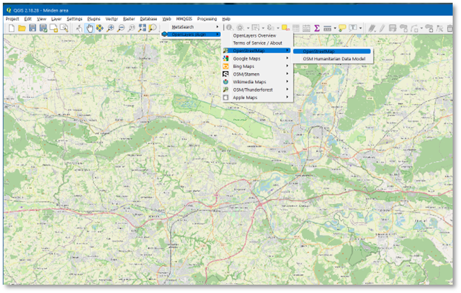
Figure 17 And having found the same area, using an OpenStreetMap layer in QGis